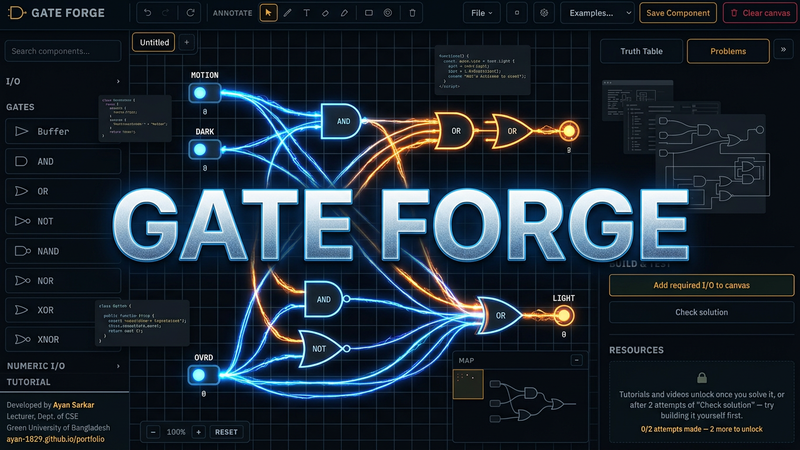

Topic 9 of 13
Counters
Ripple, synchronous, up/down, MOD-N, ring and Johnson counters, and frequency division.
← → move between slides · F full screen · M slide list
Before we start
Why this matters
What's actually ticking inside a digital clock, and why does a car's odometer roll from 099999 to 100000 instead of just giving up?
A chain of flip-flops, each one flipping its neighbour the instant it overflows — the exact same domino effect as your car's odometer wheels nudging each other along. Wire it one way and you get a clock or a scoreboard; wire it backwards and you get a very confusing countdown to a party that already happened.
Outline
Topics in this chapter
Select a topic to jump to the slide that explains it.
- Counter fundamentals
- Binary counters
- Asynchronous/ripple counters
- Wiring rule: Q vs Q′ to the next clock
- Synchronous counters
- Up/down counters
- MOD-N counters
- MOD-6, MOD-8, MOD-10, MOD-14, MOD-16
- Truncated counters
- Counter reset
- Flip-flop requirements
- Ring counters
- Johnson counters
- Frequency division
- Counter applications
Concept 1 of 6
Counter basics
A counter is a set of flip-flops that steps through a fixed sequence of states. An n-bit binary counter has 2n states. A MOD-N counter has N states. Counters count events, measure time, divide frequency and sequence control logic.
Concept 2 of 6
Ripple counters
In a ripple (asynchronous) counter, each flip-flop’s output clocks the next one. With T = 1 the first flip-flop toggles on every clock, the next on every other, and so on. Which output feeds the next stage's clock — and in which direction the count runs — depends on the flip-flop's active edge:
Wiring rule for the next stage's clock input
| Active edge | Feed next CLK from | Direction |
|---|---|---|
| Negative (falling) | Q | Up |
| Negative (falling) | Q′ | Down |
| Positive (rising) | Q′ | Up |
| Positive (rising) | Q | Down |
Either way, the rule is the same underlying idea: the next stage must see a falling edge (its own active edge, mirrored) exactly when the current stage rolls over in the counting direction you want.
Simple and cheap, but delay accumulates stage by stage, so intermediate states appear briefly and high speed is difficult. The maximum count of an n-bit counter is 2n − 1, since it starts at 0.
Interactive circuit
3-bit ripple counter (T flip-flops)
Click the switches to change the inputs and watch the LEDs. Use “Show truth table” when it appears.
Concept 3 of 6
Synchronous counters
All flip-flops share one clock, so state changes happen together. Gates decide which flip-flops toggle. For an up counter with T flip-flops: T0 = 1, T1 = Q0, T2 = Q0·Q1, T3 = Q0·Q1·Q2. Synchronous counters are faster than ripple counters and use more gates.
Interactive circuit
3-bit synchronous counter
Click the switches to change the inputs and watch the LEDs. Use “Show truth table” when it appears.
Concept 4 of 6
Up/down counters
An up/down (bidirectional) counter steps through its sequence in either direction from a single control line, usually called UP/DOWN (HIGH = count up, LOW = count down). Bit 0 always toggles on every clock. A higher bit toggles exactly when every bit below it is 1 while counting up, or every bit below it is 0 while counting down — the control input just selects which of those two conditions is live:
J1 = K1 = (Q0·UP) + (Q0′·DOWN)
J2 = K2 = (Q0·Q1·UP) + (Q0′·Q1′·DOWN)
The same pattern extends to any higher stage: AND the "all lower bits are 1" term with UP, AND the "all lower bits are 0" term with DOWN, then OR the two together.
3-bit up/down sequence
| Clock | Up | Q2 | Q1 | Q0 | Down |
|---|---|---|---|---|---|
| 0 | ↗ | 0 | 0 | 0 | ↙ |
| 1 | ↗ | 0 | 0 | 1 | ↙ |
| 2 | ↗ | 0 | 1 | 0 | ↙ |
| 3 | ↗ | 0 | 1 | 1 | ↙ |
| 4 | ↗ | 1 | 0 | 0 | ↙ |
| 5 | ↗ | 1 | 0 | 1 | ↙ |
| 6 | ↗ | 1 | 1 | 0 | ↙ |
| 7 | ↗ | 1 | 1 | 1 | ↙ |
Read the Up column top-to-bottom (0→7) to count up, or the Down column bottom-to-top (7→0) to count down — it is the same 8-state cycle run in each direction.
Concept 5 of 6
MOD-N and truncated counters
Choose n so that 2n ≥ N. A MOD-10 (decade) counter needs 4 flip-flops and skips six of the 16 states, so it is truncated. A MOD-6 counter counts 000 to 101 then resets. Truncation is done by detecting state N and resetting (asynchronously or synchronously) or by designing the next-state logic directly. A reset forces a known start state, usually all zeros.
Concept 6 of 6
Ring and Johnson counters; frequency division
A ring counter circulates a single 1 through a shift register (1000 → 0100 → 0010 → 0001), giving n states from n flip-flops. A Johnson counter feeds the complement of the last output back to the first, giving 2n states.
Frequency division: the output of stage k of a binary counter has frequency f/2k+1. A MOD-N counter’s last output is f/N.
Interactive circuit
Divide-by-2 (D flip-flop, Q′ to D)
Click the switches to change the inputs and watch the LEDs. Use “Show truth table” when it appears.
Truth tables
Truth tables (1 of 3)
3-bit up counter with T flip-flops
| Q2 | Q1 | Q0 | T2 = Q1Q0 | T1 = Q0 | T0 | Next |
|---|---|---|---|---|---|---|
| 0 | 0 | 0 | 0 | 0 | 1 | 001 |
| 0 | 0 | 1 | 0 | 1 | 1 | 010 |
| 0 | 1 | 0 | 0 | 0 | 1 | 011 |
| 0 | 1 | 1 | 1 | 1 | 1 | 100 |
| 1 | 0 | 0 | 0 | 0 | 1 | 101 |
| 1 | 0 | 1 | 0 | 1 | 1 | 110 |
| 1 | 1 | 0 | 0 | 0 | 1 | 111 |
| 1 | 1 | 1 | 1 | 1 | 1 | 000 |
Truth tables
Truth tables (2 of 3)
MOD-6 counter
| Count | Q2 | Q1 | Q0 | Next |
|---|---|---|---|---|
| 0 | 0 | 0 | 0 | 001 |
| 1 | 0 | 0 | 1 | 010 |
| 2 | 0 | 1 | 0 | 011 |
| 3 | 0 | 1 | 1 | 100 |
| 4 | 1 | 0 | 0 | 101 |
| 5 | 1 | 0 | 1 | 000 |
| 6 | 1 | 1 | 0 | unused |
| 7 | 1 | 1 | 1 | unused |
States 110 and 111 are never used. Reset at 110 (or design the next-state logic) makes the count return to 000.
4-bit ring counter
| Clock | Q3 | Q2 | Q1 | Q0 |
|---|---|---|---|---|
| 0 | 1 | 0 | 0 | 0 |
| 1 | 0 | 1 | 0 | 0 |
| 2 | 0 | 0 | 1 | 0 |
| 3 | 0 | 0 | 0 | 1 |
| 4 | 1 | 0 | 0 | 0 |
Truth tables
Truth tables (3 of 3)
4-bit Johnson counter
| Clock | Q3 | Q2 | Q1 | Q0 |
|---|---|---|---|---|
| 0 | 0 | 0 | 0 | 0 |
| 1 | 1 | 0 | 0 | 0 |
| 2 | 1 | 1 | 0 | 0 |
| 3 | 1 | 1 | 1 | 0 |
| 4 | 1 | 1 | 1 | 1 |
| 5 | 0 | 1 | 1 | 1 |
| 6 | 0 | 0 | 1 | 1 |
| 7 | 0 | 0 | 0 | 1 |
| 8 | 0 | 0 | 0 | 0 |
Interactive
Demo: live counters
Worked example 1 of 7
Worked example 1
Show the solution
- 23 = 8 < 12 ≤ 16 = 24.
- 4 flip-flops.
Worked example 2 of 7
Worked example 2
Show the solution
- Q3 divides by 24 = 16.
- 16 kHz / 16 = 1 kHz.
Worked example 3 of 7
Worked example 3
Show the solution
Worked example 4 of 7
Worked example 4
Show the solution
- In a ripple counter each stage is clocked by the previous stage's output, so a change has to propagate stage by stage. The worst case is a transition where every stage toggles (e.g. 0111 → 1000).
- Worst-case settle time = n × tpd = 4 × 15 ns = 60 ns.
- In a synchronous counter every flip-flop is driven directly by the same clock, so only one flip-flop's delay (15 ns) separates the clock edge from the outputs settling, no matter how many bits.
Worked example 5 of 7
Worked example 5
Show the solution
- 22 = 4 < 6 ≤ 8 = 23, so 3 flip-flops are needed (states 000–111; 110 and 111 are unused).
- Wire the three flip-flops as an ordinary 3-bit binary (ripple or synchronous) up counter.
- The count must be forced back to 000 as soon as it reaches 110 (state 6): feed Q2 and Q1 into a NAND gate and connect the NAND output to the asynchronous CLR input of every flip-flop.
- The counter reaches 110 for only a few nanoseconds before the NAND output clears it to 000, so 110 and 111 never appear as stable states in the output sequence.
Worked example 6 of 7
Worked example 6
Show the solution
- Counting up, Q1 changes state on the next clock exactly when Q0 = 1 (the same condition as a plain up counter).
- Counting down, Q1 changes state on the next clock exactly when Q0 = 0 (a "borrow" out of the LSB).
- Combine both conditions through the control input.
Worked example 7 of 7
Worked example 7
Show the solution
- Start: 000.
- Pulse 1 (UP): 000 → 001.
- Pulse 2 (UP): 001 → 010.
- Pulse 3 (UP): 010 → 011.
- Pulse 4 (DOWN): 011 → 010.
- Pulse 5 (DOWN): 010 → 001.
Practice
Practice (1 of 2)
Try each one on paper first, then check your answer.
Show the answer
Show the answer
Show the answer
Practice
Practice (2 of 2)
Try each one on paper first, then check your answer.
Show the answer
Show the answer
Build a 3-bit ripple counter and a MOD-6 counter with a Clock, and read the Timing diagram.

Gate ForgeA free circuit simulator — place and wire gates, generate truth tables and timing diagrams, and work through 90+ guided problems.Check yourself
Quiz
Summary
Summary
- n flip-flops give 2n states. MOD-N needs 2n ≥ N.
- Ripple counters are simple but slow. Synchronous counters share one clock.
- Truncated counters skip states by reset or by design.
- Ring: n states. Johnson: 2n states.
- A binary counter stage k divides the clock by 2k+1.